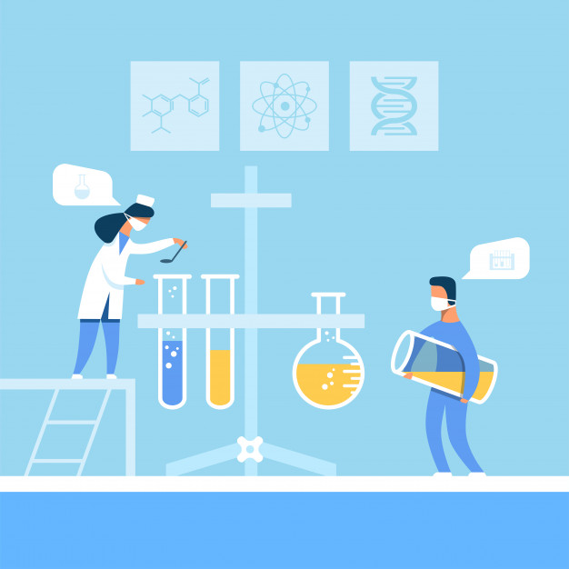
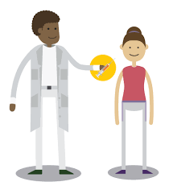

Metas até 2030
1º Meta
Até 2030, reduzir em um terço a mortalidade prematura por doenças não transmissíveis via prevenção e tratamento, e promover a saúde mental e o bem-estar.

2º Meta
Reforçar a prevenção e o tratamento do abuso de substâncias, incluindo o abuso de drogas entorpecentes e uso nocivo do álcool.

3º Meta
Até 2030, acabar com as epidemias de AIDS, tuberculose, malária e doenças tropicais negligenciadas, e combater a hepatite, doenças transmitidas pela água, e outras doenças transmissíveis.

4º Meta
Atingir a cobertura universal de saúde, incluindo a proteção do risco financeiro, o acesso a serviços de saúde essenciais de qualidade e o acesso a medicamentos e vacinas essenciais seguros, eficazes, de qualidade e a preços acessíveis para todos.